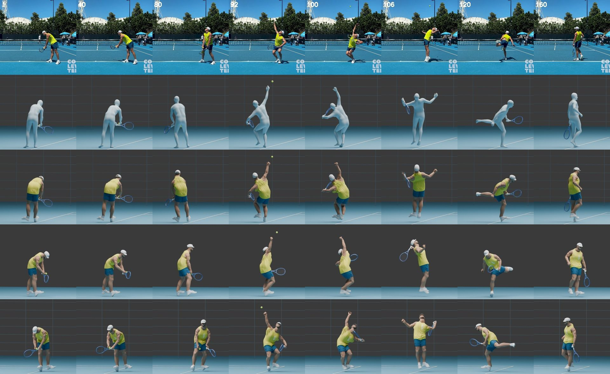

Video to Motion
Tennis video to 3D motion, rackets and bodies. Input left, output right.
The library: 16 points, 6 players
Video to body motion
Ben Shelton serve, the first accepted clip
Modal · FlowHMR · 2026-10-22 · $0.23 · accepted
Fourteen rear-court 4K clips in one batch
Modal · FlowHMR · 2026-10-28 · $4.44 · accepted
Four more rear-court points
Modal · FlowHMR · 2026-10-28 · $1.43 · accepted
Djokovic groundstroke on a 4K crop
Modal · FlowHMR · 2026-10-28 · $0.33 · diagnostic
Djokovic body shape from two angles
Modal · FlowHMR · 2026-10-24 · $0.50 · diagnostic
ATP broadcast benchmark
Modal · FlowHMR · 2026-10-26 · $0.28 · diagnostic
College match point
Modal · FlowHMR · 2026-10-22 · $0.28 · diagnostic
Fourteen-second rally
Modal · FlowHMR · 2026-10-24 · $0.48 · diagnostic
Two players in one point
Modal · FlowHMR · 2026-10-23 · $0.47 · rejected
Three practice clips
Modal · FlowHMR · 2026-10-23 · $0.54 · diagnostic
Six-second pilot
Modal · FlowHMR · 2026-10-22 · $0.31 · diagnostic
SAM-3D observations, three sources
Modal · SAM-3D · 2026-10-26 · $0.07 · diagnostic
SAM-3D-Body / MHR diagnostic
Modal · SAM-3D-Body · 2026-10-22 · $0.25 · diagnostic
The racket
 Racket model, built in Blender
Racket model, built in Blender
 Face
Face
 Tip grommets
Tip grommets
 Frame edge
Frame edge
Finding the racket
RacketVision on the rear-court clips
Modal · RacketVision · 2026-10-28 · $0.38 · diagnostic
RacketVision on Djokovic, rear and 4K crop
Modal · RacketVision · 2026-10-27 · $0.03 · diagnostic
RacketVision pilot, many clips
Modal · RacketVision · 2026-10-22 · $0.19 · diagnostic
Hand and racket crops
Modal · FlowHMR crops · 2026-10-22 · $0.10 · diagnostic
Solving the racket through the arm
 Djokovic, Indian Wells A. Red old fit, green arm solve, cyan detections
Djokovic, Indian Wells A. Red old fit, green arm solve, cyan detections
 Djokovic, Turin
Djokovic, Turin
 Djokovic, Indian Wells C
Djokovic, Indian Wells C
 Sinner return
Sinner return
Grip
 Grip registration, all 16 points
Grip registration, all 16 points
 Hand at contact, 120 fps
Hand at contact, 120 fps
120 fps changes everything
Alcaraz forehand, 120 fps. Source, overlay, front, side, back
 Through contact
Through contact
 Follow-through
Follow-through
Face angle at contact
 Face angle at contact, before and after
Face angle at contact, before and after
 Same check across the library
Same check across the library
Djokovic groundstroke, rebuilt from a 4K crop
Djokovic groundstroke from a 4K crop
Whole bodies from photos: fal.ai Rodin
Shelton serve, his own Rodin body

Source, plain body, Rodin body
Ben Shelton
fal.ai · Rodin 2.5 High · 2026-10-27 · $0.40 · paused
Flavio Cobolli
fal.ai · Rodin 2.5 High · 2026-10-28 · $0.40 · paused
Carlos Alcaraz
fal.ai · Rodin 2.5 High · 2026-10-28 · $0.40 · paused
Giovanni Mpetshi Perricard
fal.ai · Rodin 2.5 High · 2026-10-27 · $0.40 · paused
Novak Djokovic, full-body references
fal.ai · Rodin 2.5 High · 2026-10-28 · $0.40 · paused
Novak Djokovic, knee-cropped references
fal.ai · Rodin 2.5 High · 2026-10-28 · $0.40 · failed
Novak Djokovic, two photos
fal.ai · Rodin 2.5 High · 2026-10-26 · $0.40 · rejected
Novak Djokovic, one photo
fal.ai · Rodin 2.5 High · 2026-10-26 · $0.40 · rejected
Faces and whole-person reconstruction on Modal
UP2You whole-person reconstruction
Modal · UP2You · 2026-10-26 · $0.36 · rejected
MICA face fit
Modal · MICA · 2026-10-26 · $0.01 · rejected
Meshy
Court-stories cast
Meshy · Meshy 7.1 · 2026-10-20 · about 1,900 credits (2,108 → 216 by 21 Oct) · used on page
Track-sprint riders and staff
Meshy · Meshy 7.1 · 2026-10-19 · part of 3,000 credits bought 19 Oct ($20) · built
Three Djokovic heads
Meshy · Meshy 7.1 · 2026-10-24 · 105 credits · rejected
Shelton likeness, multi-view
Meshy · Meshy 7.1 · 2026-10-23 · 35 credits · rejected
First tennis figure
Meshy · Meshy 6 Lite · 2026-09-16 · 49 of 130 free credits · rejected
Other motion capture tried
GEM-X mocap
Modal · GEM-X · 2026-10-21 · $3.35 · not adopted
Kimodo
Modal · Kimodo · 2026-10-21 · $0.13 · not adopted
Image to 3D for a different subject: an ibex
Concept images
fal.ai · Flux, nano-banana · 2026-10-27 · built
Image to 3D, two engines
fal.ai · Hunyuan3D, Tripo · 2026-10-28 · built
Realistic ibex
fal.ai · nano-banana, Hunyuan3D, Tripo · 2026-10-28 · built
Mountain
fal.ai · nano-banana, Tripo · 2026-10-28 · built
Rodin image-to-3D ibex
fal.ai · Rodin 2.5 · 2026-10-29 · used on page
Backgrounds
fal.ai · nano-banana · 2026-10-28 · built